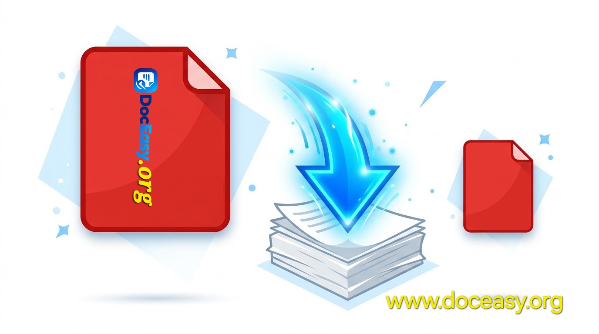

PDF Compressor
Reduce the size of your PDF files — or set a target size and let the tool hit it. 100% browser-based, your files never leave your device.
Select or Drop PDF File
Shrink your PDF in seconds — max 100 MB
Compression Level
Or Set a Target Size (Optional)
Enter a size and the tool will auto-tune quality until the PDF fits — usually landing just below your target (e.g. target 1 MB → about 0.98 MB). Leave blank to use the compression level above.
Complete Guide: How to Compress a PDF Without Losing Quality
PDF files can grow surprisingly large — especially when they contain scanned documents, high-resolution images, or many pages. Large PDFs are hard to email, slow to upload, and awkward to share. The DocEasy PDF Compressor reduces your PDF's file size directly in your browser, keeping text sharp and images clear while dramatically cutting the size.
Unlike most online compressors, nothing you upload ever leaves your device. Everything runs locally using modern browser APIs, which makes this tool safe for sensitive documents like contracts, invoices, ID proofs, medical records, and confidential reports.

📷 [Place Demo Here: assets/images/pdf-compressor-demo.jpg]What is PDF Compression?
PDF compression is the process of reducing a PDF file's size while keeping it readable. A PDF is a container that stores text, vector graphics, images, and fonts. The bulk of a PDF's size usually comes from embedded images — scans, screenshots, or photographs placed inside the document.
Compression works by re-encoding those images at a lower quality or resolution, and by removing redundant metadata that bloats the file without adding value. Done well, the result is a PDF that looks the same on screen but is dramatically smaller — sometimes by 80–90%.
Why Compress a PDF?
- Email limits: Gmail, Outlook, and Yahoo cap attachments at 25 MB. Compressing lets you send larger documents in a single email.
- Faster uploads: Smaller PDFs upload faster to cloud storage, job portals, government forms, and college admission sites.
- Storage savings: Free up space on your phone, laptop, or Google Drive. A 50 MB scan can drop to under 5 MB.
- Better sharing: Small files are easier to send on WhatsApp, Telegram, Slack, and Discord without hitting size limits.
- Website speed: If you host PDFs on a website, smaller files mean faster downloads for visitors and better SEO.
- Portal requirements: Many Indian government portals (income tax, MCA, university admissions) require PDFs under a specific size like 2 MB or 5 MB.
- Printing efficiency: Large PDFs slow down print spooling. Compressed files print faster.
- Cloud backup: Smaller files sync faster to Dropbox, OneDrive, and iCloud.
Two Ways to Compress with DocEasy
This tool gives you two ways to control the output:
1. Compression Presets
Pick one of four presets — High Quality, Balanced, Compact, or Screen. Fast and predictable, great when you just want a smaller file without thinking too much. Under the hood, each preset uses a specific JPEG quality and render scale:
| Preset | Image Quality | Render Scale | Best For |
|---|---|---|---|
| High Quality | 85% | 1.5× | Printing, contracts |
| Balanced | 70% | 1.3× | Most everyday use |
| Compact | 55% | 1.1× | Email, WhatsApp |
| Screen | 40% | 0.9× | Screen-only reading |
2. Target Size Mode
Enter a size like 1 MB or 500 KB and the tool auto-tunes quality until the PDF fits just below your target — usually landing around 0.95–0.99 of the target (e.g. 1 MB target → about 0.98 MB). This is perfect when you have a strict portal limit.
The tool works by trying up to 10 quality/scale combinations, starting from the highest and progressively reducing. It stops the moment a result fits within your target, so you always get the best possible quality that still meets the limit.
Step-by-Step: How to Compress a PDF
- Upload Your PDF: Drag and drop your PDF into the upload area, or click to browse. Files up to 100 MB are supported.
- Choose a Level or Target Size: Use the presets, or type a target size and pick KB or MB.
- Click Compress PDF: The tool re-encodes each page using PDF.js and PDF-lib. If a target was set, it automatically tries multiple quality levels until the file fits.
- See the Savings: After compression, the tool shows original size, new size, and percentage saved.
- Download Your File: Click "Download Compressed PDF" to save the smaller file.
What Kind of PDFs Compress Best?
- Scanned documents: Scanned PDFs are essentially photos of pages. Compressing them can cut the size by 70–90% with almost no visible change on screen.
- Photo-heavy PDFs: Documents with many embedded photos (brochures, product catalogues) benefit the most.
- Presentations exported as PDF: Slide decks usually contain large images. Compressing brings the file down dramatically.
- Reports and marketing collateral: These often carry high-resolution images that can be safely downsized.
- ID proofs and certificates: Scanned Aadhaar, PAN, marksheets compress very well.
Text-only PDFs (like a plain essay or a simple Word export) are already small — they won't shrink much. That's expected and normal, because there are no images to compress.
How Much Can You Expect to Save?
The exact savings depend on the PDF, but here are typical ranges from real-world files:
| Type of PDF | Typical Savings |
|---|---|
| Scanned ID / marksheet | 70–90% |
| Photo-heavy brochure | 60–80% |
| PowerPoint export | 50–75% |
| Mixed report | 40–60% |
| Text-only document | 0–10% |
Privacy First — Always
Everything runs in your browser. Your PDF is never uploaded to any server, never sent to a cloud, and never stored anywhere. There's no account, no email, and no tracking. When you close the tab, everything is gone. This makes DocEasy suitable for contracts, financial statements, medical records, tax documents, and any other sensitive file.
You can verify this yourself — open Developer Tools (F12), go to the Network tab, and click Compress. You will see zero outgoing requests carrying your PDF data.
Tips for the Best Results
- Always keep a backup of the original PDF — you can never recover quality once it's reduced.
- For email, aim for under 20 MB so you have headroom below the common 25 MB cap.
- If the PDF will be printed, use High Quality to avoid visible softness.
- For WhatsApp or social sharing, Screen level or a 1–2 MB target works well.
- Text-only PDFs won't compress much — this is normal and expected.
- If a PDF is over 100 MB, split it first with our Split PDF tool, then compress each part.
Frequently Asked Questions
Is the PDF Compressor free?
Yes. DocEasy is completely free with no signup, no email, and no hidden limits.
Are my files uploaded to your servers?
No. Everything runs inside your browser. Your PDF never leaves your device.
Can I set a specific target size like 1 MB?
Yes. Enter 1 in the target field, choose MB, and the tool will auto-tune quality until the file fits just below your target.
Will compression reduce the quality?
It depends on the level or target. High Quality keeps images sharp. Screen level reduces quality for the smallest possible file.
What is the maximum file size?
You can upload PDFs up to 100 MB. For larger files, split the PDF first with our Split PDF tool, then compress each part.
Does it work on mobile?
Yes. DocEasy works on any modern browser — desktop, tablet, or smartphone — with no app install required.
Does the tool add a watermark?
The compressed PDF includes a tiny doceasy.org mark at the bottom-right corner of each page. This is intentional — it helps spread awareness of the free tool. If you need watermark-free output, contact us.
Why is my PDF not getting much smaller?
Text-only PDFs (no images) are already highly optimized and can't be compressed much. Similarly, PDFs that were previously compressed won't shrink a second time. For the biggest savings, use scanned or image-heavy PDFs.
Can I compress multiple PDFs at once?
Not currently — the tool processes one PDF at a time. Batch compression is on our roadmap.
Is there a daily limit?
No. Compress as many PDFs as you want, as many times as you want. No limits, no accounts.
Does compression remove text-selectability?
Yes. The compression process re-encodes each page as a JPEG image, so text becomes part of the image. If you need selectable text, keep the original PDF. This trade-off is what enables such large size reductions.
Can I use this for commercial purposes?
Yes. Everything you generate with DocEasy belongs to you. You can use it for commercial projects, client work, or paid courses.
Try It Now
Ready to make your PDF smaller? Scroll up, drop your file into the upload zone, pick a preset or enter a target size, and click Compress PDF. Your new, smaller file will be ready in seconds. If you find this tool useful, share it with friends and colleagues who need a fast, private way to compress documents.